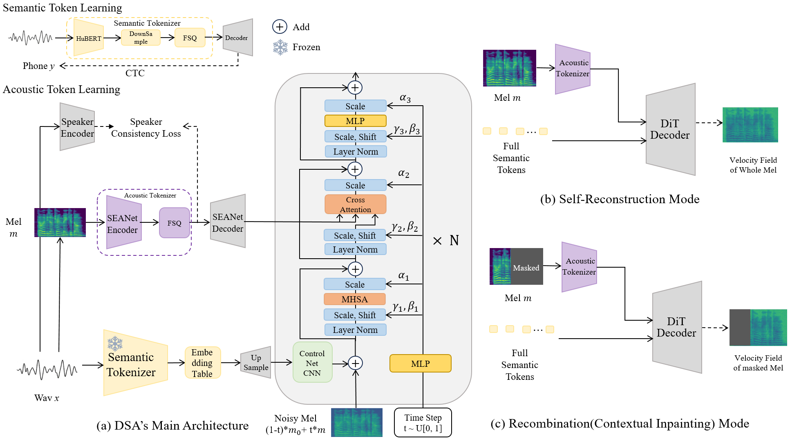

Abstract
Speech tokenizers serve as the cornerstone of discrete Speech Large Language Models (Speech LLMs).
Existing tokenizers either prioritize semantic encoding, fuse semantic content with acoustic style inseparably, or achieve incomplete semantic-acoustic disentanglement.
To achieve better disentanglement, we propose DSA-Tokenizer, which explicitly disentangles speech into discrete semantic and acoustic tokens via distinct optimization constraints.
Specifically, semantic tokens are supervised by ASR to capture linguistic content, while acoustic tokens focus on mel-spectrograms restoration to encode style.
To eliminate rigid length constraints between the two sequences, we introduce a hierarchical Flow-Matching decoder that further improves speech generation quality.
Furthermore, we employ a joint reconstruction-recombination training strategy to enforce this separation. DSA-Tokenizer enables high fidelity reconstruction and flexible recombination through robust disentanglement, facilitating controllable generation in speech LLMs.
Our analysis highlights disentangled tokenization as a pivotal paradigm for future speech modeling.
Overview of the Framework
Overview of the proposed framework and training strategy.

Overview of the proposed framework and training strategy.
(a) DSA-Tokenizer framework: Input audio $X$ is encoded into discrete semantic and acoustic tokens, which are fed into the DiT decoder for audio generation.
(b) Self-Reconstruction Mode: The model learns to predict the velocity field of the full Mel-spectrogram based on the complete acoustic and semantic tokens.
(c) Recombination (Contextual Inpainting) Mode: The model learns to predict the velocity field of the masked Mel-spectrogram region based on the acoustic tokens of the unmasked region and the full semantic tokens.
Reconstruction and Recombination Audios
1. Reconstruction
Speech reconstruction results of different tokenizers (higher fidelity indicates better performance):
| Sample |
Groundtruth |
WavTokenizer |
Mimi |
Encodec |
SpeechTokenizer |
DualCodec |
SAC |
DSA (ours) |
2. Recombination
Speech recombination results (flexible semantic-acoustic fusion):
| Sample |
Semantic Source |
Acoustic Source |
Mimi |
Encodec |
SpeechTokenizer |
DualCodec |
SAC |
DSA (ours) |
LLM-VC
LLM-VC (LLM-based Voice Conversion) results (high-quality voice style transfer with semantic preservation):
| Sample |
Semantic Source |
Acoustic Source |
WavTokenizer |
SAC |
DSA (ours) |
Disentanglement Probing Results
Disentanglement probing results demonstrate the superiority of DSA-Tokenizer in semantic-acoustic disentanglement:

Disentanglement probing results. DSA-Tokenizer outperforms baselines in both semantic-acoustic disentanglement, where the semantic token has low WER and low speaker similarity, while the acoustic token carries high WER and high speaker similarity.